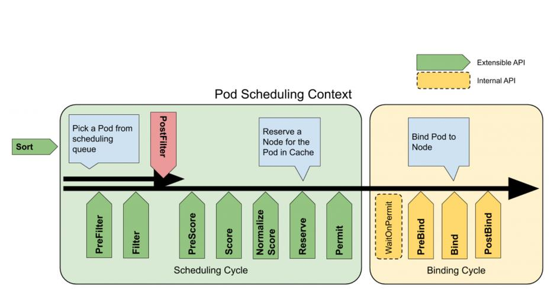

K8s 自定义调度
默认调度器的可扩展机制，在 Kubernetes 里面叫作 Scheduler Framework。
- 将插件和原生调度器统一构建成新镜像使用；
在调度器生命周期的各个关键点上，为用户暴露出可以进行扩展和实现的接口，从而实现用户自定义调度。
调度的生命周期
在执行调度流程时，运行到相应的扩展点时会调用用户注册的插件，影响调度决策的结果。将用户的调度逻辑集成到 Scheduling Framework 中。
分为两个阶段 scheduling cycle 和 binding cycle。
- scheduling cycle 是同步执行的，同一个时间只有一个 scheduling cycle，是线程安全的；
- binding cycle 是异步执行的，同一个时间中可能会有多个 binding cycle在运行，是线程不安全的。

Schedule Status
Status 中的 Code（int） 字段的枚举定义：
- Success ：plugin 正常运行，且pod 可调度；
- Error ：internal plugin errors, unexpected input, etc；
- Unschedulable ：plugin 发现 pod 不可调度，但可以通过运行其它的 postFilter 插件（如抢占）使得 Pod 可调度；
- UnschedulableAndUnresolvable ：plugin 发现 pod 不可调度，也不能通过运行其它的 postFilter 插件（如抢占）使得 Pod 可调度（会跳过）；
- Wait：
Permit插件发现 Pod 需要等待时，返回该值； - Skip：用于以下场景：
Bind插件选择跳过；PreFilter插件返回 Skip，使得Filter插件/PreFilterExtensions将会被跳过；PreScore插件返回Skip，使得Score插件跳过；
Plugin Interface
接口定义 interface
Scheduling Cycle
QueueSortPlugin：对 scheduling queue 中的 pod 排序，一次只能启用一个队列排序插件（具体配置见下面配置文件章节内容）
PreFilterPlugin：不含节点信息，在过滤之前预处理或检查 Pod 或集群的信息。 它们可以将 Pod 标记为不可调度。
// 可以返回 PreFilterResult to influence which nodes to evaluate downstream
PreFilter(ctx context.Context, state *CycleState, p *v1.Pod) (*PreFilterResult, *Status)
// called after PreFilter(TODO ? how to use ?)
PreFilterExtensions() PreFilterExtensions
FilterPlugin：含节点信息，过滤不能运行 Pod 的节点。 过滤器的调用顺序是可配置的
// return "Success" to declare that the given node fits the pod
Filter(ctx context.Context, state *CycleState, pod *v1.Pod, nodeInfo *NodeInfo) *Status
-
PostFilterPlugin：当 pod 不能被调度时，被调用； -
ReservePlugin：信息扩展点，当资源已经预留给 Pod 时，会通知插件。 这些插件还实现了Unreserve接口，在Reserve期间或之后出现故障时调用。
// called when the scheduler cache is updated. If return failed status, the scheduler will call the Unreserve method for all enabled ReservePlugins
Reserve(ctx context.Context, state *CycleState, p *v1.Pod, nodeName string) *Status
// called by the scheduling framework when a reserved pod was rejected ...
Unreserve(ctx context.Context, state *CycleState, p *v1.Pod, nodeName string)
-
PermitPlugin：不满足条件时，返回 WAIT 状态（等待多久后重新调度），用于Gang/Co-Scheduler场景； -
返回 WAIT 状态，该 Pod 会被记录到waitingPods中保存；
-
通过
IterateOverWaitingPods方法对所有的 waitingPod 调用waitingPod.Allow(cs.Name())方法（发送chan），允许调度，不再等待； -
WaitOnPermit在 bind 阶段调用，会等待 waitPod 的 chan，从waitingPods中删除；
- 相关的 Score 插件，用于从一堆节点中选取最合适的节点调度 Pod；
Binding Cycle
-
PreBindPlugin：插件在 Pod 绑定节点之前执行 -
BingPlugin：将 Pod 与节点绑定。bind插件是按顺序调用的，只要有一个插件完成了绑定，其余插件都会跳过 -
PostBindPlugin：信息扩展点，在 Pod 绑定了节点之后调用。
自定义插件实现
编写插件代码
可以参考官方示例：coscheduler plugin code
编写plugin代码主要分为三个步骤：
- 编写plugin的主逻辑
- 编写plugin的注册逻辑
- 编写plugin的配置文件：KubeSchedulerConfiguration
调度器配置
scheduler-config.yaml文件内容如下（示例 coscheduling 插件）
apiVersion: kubescheduler.config.k8s.io/v1beta2
kind: KubeSchedulerConfiguration
leaderElection:
# 使能Leader选举
leaderElect: true
clientConnection:
# 指定了kubeconfig文件路径
kubeconfig: /etc/kubernetes/scheduler.conf
profiles:
# 默认调度器，启动如下内容
- schedulerName: default-scheduler
plugins:
# Required，启用 Coscheduling 的队列中 pod 的排序算法，只能有一种算法实现
queueSort:
enabled:
- name: Coscheduling
disabled:
- name: "*"
preFilter:
enabled:
- name: Coscheduling
postFilter:
enabled:
- name: Coscheduling
# Required
permit:
enabled:
- name: Coscheduling
# Required，
reserve:
enabled:
- name: Coscheduling
# 插件的配置
pluginConfig:
- name: Coscheduling
args:
permitWaitingTimeSeconds: 10
deniedPGExpirationTimeSeconds: 3
本地调试
本地启动调度器进行测试，启动脚本如下所示：
/etc/kubernetes/scheduler-conf为连接Kubernetes使用的config文件/etc/kubernetes/scheduler-config.yaml为上一节编写的配置文件
go run cmd/scheduler/main.go \
--kube-api-qps=200 \
--kube-api-burst=300 \
--leader-elect=false \
--profiling=false \
--authentication-kubeconfig=/etc/kubernetes/scheduler-conf \
--authorization-kubeconfig=/etc/kubernetes/scheduler-conf \
--kubeconfig=/etc/kubernetes/scheduler-conf \
--config=/etc/kubernetes/scheduler-config.yaml \
--v=5
Pod 需要配置 schedulerName
集群部署使用
如果 plugin 引入自定义的 CRD，则需要安装相关的 controller 和 rbac 配置。
构建kube-scheduler 镜像
将scheduler配置文件传递到master节点
将scheduler的配置文件 scheduler-config.yaml 传递到master节点的/etc/kubernetes 目录下。
修改master上kube-scheduler的pod yaml
Kubernetes scheduler 是以static pod的形式在master节点上运行的，因此只要修改在/etc/kubernetes/manifests/kube-scheduler.yaml，kubelet就会重新启动kube-scheduler。
kube-scheduler.yaml 的修改涉及到三处地方：
- kube-scheder启动参数中添加
--config参数指定kube-scheduler.yaml - 添加
hostPath volumes将kube-scheduler.yaml映射到容器中 - 更改
kube-scheduler image为我们的新创建的image
apiVersion: v1
kind: Pod
metadata:
creationTimestamp: null
labels:
component: kube-scheduler
tier: control-plane
name: kube-scheduler
namespace: kube-system
spec:
containers:
- command:
- kube-scheduler
- --authentication-kubeconfig=/etc/kubernetes/scheduler.conf
- --authorization-kubeconfig=/etc/kubernetes/scheduler.conf
- --bind-address=127.0.0.1
- --feature-gates=IPv6DualStack=true
- --port=0
- --profiling=false
# 这两个配置可能需要去掉，因为scheduler-config.yaml可能会配置 leader-elect 和 kube config 信息
# - --kubeconfig=/etc/kubernetes/scheduler.conf
# - --leader-elect=true
# 1. 指定kube-scheduler.yaml
- --config=/etc/kubernetes/scheduler-config.yaml
# 2. 更改镜像
image: tingshuai.yts/kubernetes/scheduler:v20220822-v0.0.1
imagePullPolicy: IfNotPresent
livenessProbe:
failureThreshold: 7
httpGet:
host: 127.0.0.1
path: /healthz
port: 10259
scheme: HTTPS
initialDelaySeconds: 10
periodSeconds: 10
timeoutSeconds: 15
name: kube-scheduler
resources:
requests:
cpu: 100m
startupProbe:
failureThreshold: 24
httpGet:
host: 127.0.0.1
path: /healthz
port: 10259
scheme: HTTPS
initialDelaySeconds: 10
periodSeconds: 10
timeoutSeconds: 15
volumeMounts:
- mountPath: /etc/kubernetes/scheduler.conf
name: kubeconfig
readOnly: true
# 3. 添加hostPath volumes
- mountPath: /etc/kubernetes/scheduler-config.yaml
name: scheduler-config
readOnly: true
- mountPath: /etc/localtime
name: localtime
hostNetwork: true
priorityClassName: system-node-critical
securityContext:
seccompProfile:
type: RuntimeDefault
volumes:
- hostPath:
path: /etc/kubernetes/scheduler.conf
type: FileOrCreate
name: kubeconfig
# 3. 添加hostPath volumes
- hostPath:
path: /etc/kubernetes/scheduler-config.yaml
type: FileOrCreate
name: scheduler-config
- hostPath:
path: /etc/localtime
type: ""
name: localtime
单 Scheduler 多配置文件
所有profile必须在
queueSort扩展点使用相同的插件，并具有相同的配置参数（如果适用）。 这是因为调度器只有一个保存 pending 状态 Pod 的队列。
可以配置 kube-scheduler 运行多个配置文件，即同一个KubeSchedulerConfiguration的profiles 有多个schedulerName
示例：调度器将运行两个配置文件：一个使用默认插件，另一个禁用所有打分插件。
apiVersion: kubescheduler.config.k8s.io/v1
kind: KubeSchedulerConfiguration
profiles:
- schedulerName: default-scheduler
- schedulerName: no-scoring-scheduler
plugins:
preScore:
disabled:
- name: '*'
score:
disabled:
- name: '*'
多Schduler模式
Kubernetes 允许在一个集群中运行多个调度程序，可以告诉 Kubernetes 为每个 Pod 使用哪个调度器。
- 示例
apiVersion: v1
kind: Pod
metadata:
name: no-annotation
labels:
name: multischeduler-example
spec:
# 未提供调度器名称，则会使用 default-scheduler 自动调度 pod
schedulerName: my-scheduler
containers:
- name: pod-with-no-annotation-container
image: registry.k8s.io/pause:2.0
三方调度器
kueue：kubernetes 官方维护的队列系统
Yunikorn：Apache Yunikorn